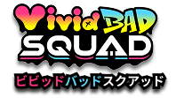
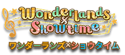
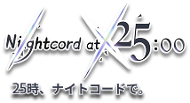

Virtual singers, que traduzido significa “Cantores Virtuais”, são os conhecidos “vocaloids”: sintetizadores de voz onde o produtor pode usar para criar vocais para músicas. Dentro do universo do Project Sekai, eles moram em mundos virtuais chamados de SEKAI e têm diferentes formas de si mesmos para ajudar os demais personagens a acharem seus verdadeiros sentimentos.
Ichika, Saki, Honami e Shiho são amigas de infância que formaram uma banda juntas e assim se juntarem para superarem suas diferenças, se aproximarem novamente e tocarem juntas. Seu estilo musical é um pop-rock com letras como superação de erros do passado e amizade, numa estética de típica banda de adolescentes do ensino médio.
Um grupo formado por Minori, uma garota que sonha em ser idol e Haruka, Airi e Shizuku, que já haviam desistido de seus sonhos, mas ganharam uma segunda chance. Elas se juntam para provar que qualquer um pode brilhar. Suas músicas trazem letras sobre esperança e perseverança em um estilo de pop japonês alegre e energético.

Grupo de artistas de rua que se formou pela união da dupla Kohane e An a dupla de Akito e Toya, que se juntaram com o objetivo de superar um evento legendário de música e também evoluírem juntos. Suas músicas tem letras sobre evoluir e se esforçar para superar a você mesmo, em um estilo feito de uma mistura de rap, hip-hop e eletrônica.

Uma excêntrica trupe de teatro formada por Tsukasa, Emu, Nene e Rui, que tem como objetivo criar apresentações que possam fazer todos sorrirem. Seu gênero musical é um pop alegre, teatral e contagiante, com letras positivas que buscam trazer alegria a aqueles que a escutam.

Um grupo misterioso que só opera a partir das 1 da manhã, formado por Kanade, Mafuyu, Ena e Mizuki, que se juntam online para compor anonimamente, com o objetivo de salvar as pessoas por meio da música, mesmo que as proprias criadoras carregam uma bagagem emocional pesada. Suas músicas são melancólicas, emocionais, num gênero musical que mistura um pop obscuro e um pouco de eletrônica, suas letras trazem temas como identidade, conflitos emocionais e até aceitação.